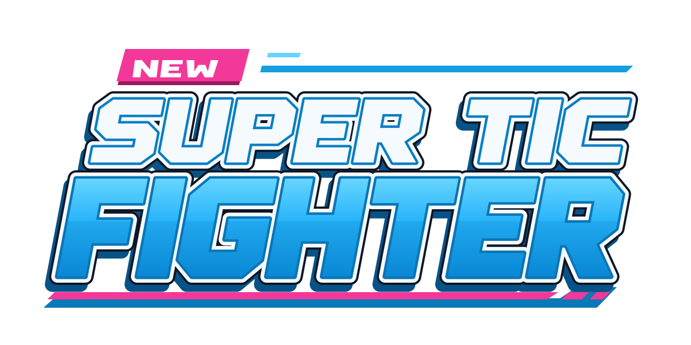

<!doctype html><html lang="en"><meta charset="utf-8"><meta name="viewport" content="width=device-width,initial-scale=1"><title>Arcade Reborn · New Super TIC Fighter</title>
<style>*{box-sizing:border-box}body{margin:0;background:#10121b;color:#f5faff;font-family:Arial,sans-serif}.board{width:1440px;margin:auto;padding:58px 76px 46px}header{display:flex;justify-content:space-between;align-items:center;color:#a8b4c9;font-size:12px;letter-spacing:2px;text-transform:uppercase}header strong{color:#fff;font-size:16px;letter-spacing:.8px}.hero{height:623px;display:flex;align-items:center;justify-content:center;position:relative}.hero:before{content:'';position:absolute;inset:45px 90px;background:radial-gradient(ellipse,#16406555,transparent 70%)}.hero img{width:1120px;position:relative}footer{border-top:1px solid #303644;padding-top:27px;display:grid;grid-template-columns:1.2fr 1fr;gap:100px}h1{font-size:30px;letter-spacing:-.5px;margin:0 0 12px}p{color:#a4afc0;line-height:1.6;font-size:14px;margin:0;max-width:505px}.swatches{display:flex;gap:7px;justify-content:flex-end;margin-bottom:15px}.swatches i{display:block;width:61px;height:10px;background:var(--c)}.detail{text-align:right;color:#a4afc0;font-size:11px;letter-spacing:1px;text-transform:uppercase}.checks{display:grid;grid-template-columns:1fr 1fr;gap:24px;padding-top:45px}.sample{height:250px;display:flex;justify-content:center;align-items:center;border:1px solid #303644;position:relative}.sample.light{background:#F3F5F8}.sample img{width:340px}.sample span{position:absolute;bottom:15px;left:20px;font-size:10px;letter-spacing:1.5px;color:#93a1b7}.sample.light span{color:#627084}.links{padding-top:25px;display:flex;gap:25px}a{color:#66d5ff;font-size:13px}@media(max-width:1000px){.board{width:100%;padding:35px}.hero{height:auto}.hero img{width:100%}footer{gap:40px}.checks{grid-template-columns:1fr}.sample img{max-width:85%}}</style>
<main class="board"><header><strong>New Super TIC Fighter</strong><span>01 / Logo exploration</span></header><div class="hero"></div><footer><div><h1>Arcade Reborn</h1><p>The original arcade energy, redrawn. Forward-leaning lettering, a built-in NEW tab, and a pink platform underline.</p></div><div><div class="swatches"><i style="--c:#29b4fa"></i><i style="--c:#f5faff"></i><i style="--c:#f23899"></i><i style="--c:#075388"></i></div><div class="detail">Original vector lettering · Transparent master</div></div></footer><section class="checks"><div class="sample light"><span>ON LIGHT / 340 PX</span></div><div class="sample"><span>ONE COLOUR / 340 PX</span></div></section><div class="links"><a href="arcade-reborn.svg" download>Download colour SVG</a><a href="arcade-reborn-mono.svg" download>Download monochrome SVG</a></div></main></html>